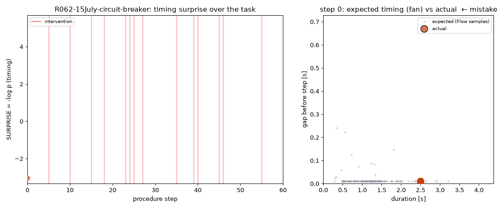
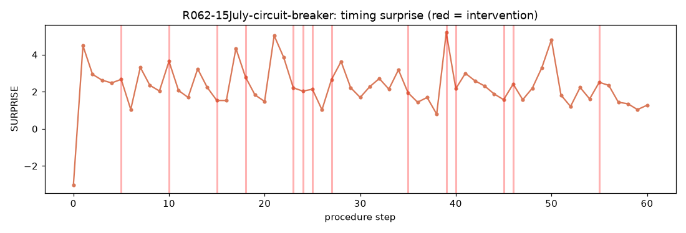
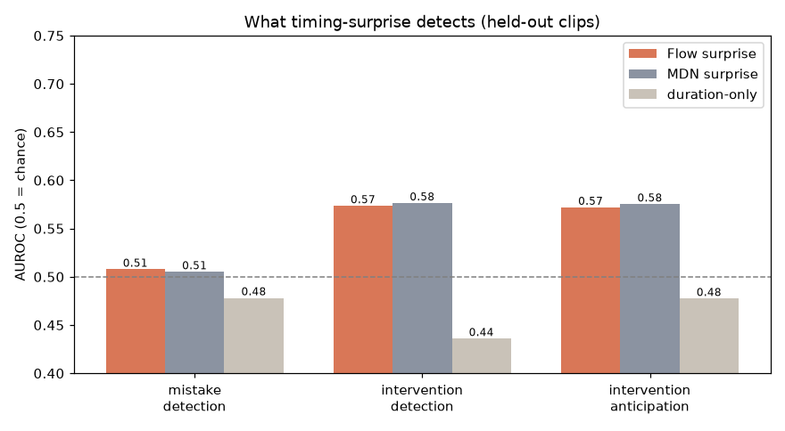
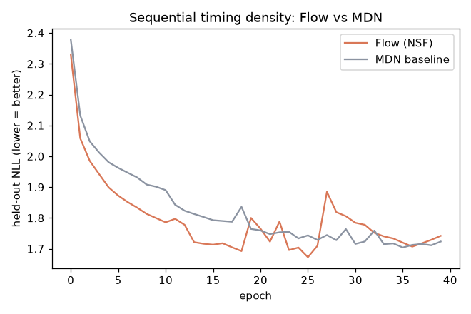

実験C · SURPRISE = −log p(タイミング | 履歴, 行動) でミス／介入を先読みできるか。
何をしたか：HoloAssistのオープン注釈（動画不要）から各ステップの所要時間・間を取り出し、 履歴で条件づけた逐次NSFで手順ペースの密度を学習。密度の当てはまりはFlowがMDNに勝つ（NLLが低い）一方、 タイミング単独ではミス検出はほぼ偶然・介入は弱い信号という正直な結果。実験Aで欠けていた 逐次サプライズと生成（期待タイミングfan）を使えている。

**左**＝手順ステップ順に並べた **サプライズ = −log p(タイミング)** の推移。赤い縦線＝指導者の介入。**右**＝各ステップでFlowが**サンプリングで生成した「期待される所要時間・間の分布(fan)」**（灰）と、実際の値（オレンジ／ミスは濃橙／介入は赤）。**見どころ**：Aで眠らせていた*逐次の厳密尤度*と*生成*を使えている。実測が灰の雲から外れる＝pace異常。

手順が進むにつれサプライズがどう動くか。介入(赤線)の周辺でやや持ち上がる傾向はあるが、単発のスパイクで介入を当てられるほど強くはない（下のAUC参照）。

3課題×3手法のAUROC（0.5=偶然）。**見どころ**：①ミス検出はほぼ偶然(≈0.51)＝「間違い」はタイミングでなく*意味*の異常。②介入の検出/予兆は弱いが偶然超え(≈0.57)。③FlowとMDNはAUCではほぼ互角＝**下流の天井はモデルでなく信号（タイミング）側**にある。

**ここがNFの本質的な勝ち**：held-out NLLで **Flow < MDN**（低いほど良い）。手順タイミングの分布は非ガウス・多峰で、Neural Spline Flowの表現力が効く＝実験Aで『ガウスに並ばれた』反省を、密度の指標では克服できている。
python -m holo.report で自動生成。NF forget/mistakeシリーズ(A–E)のC。